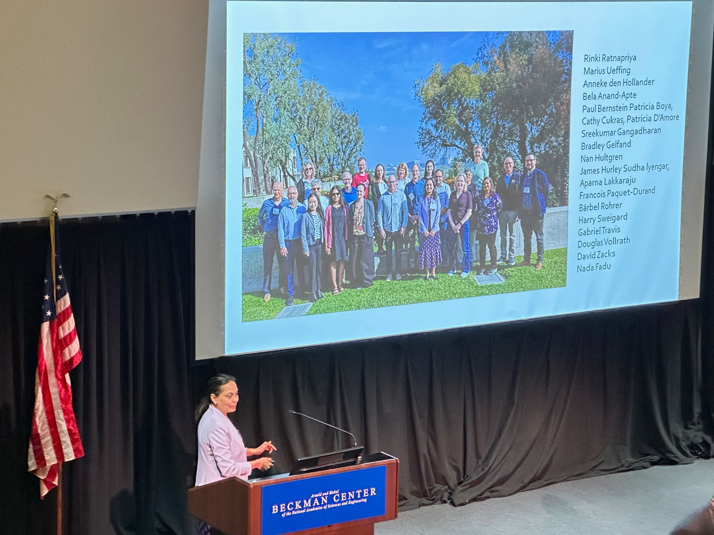
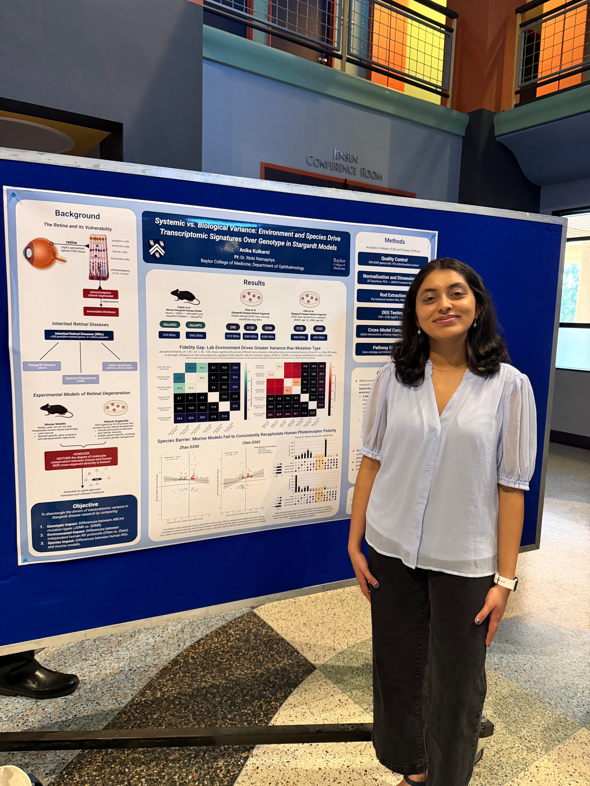
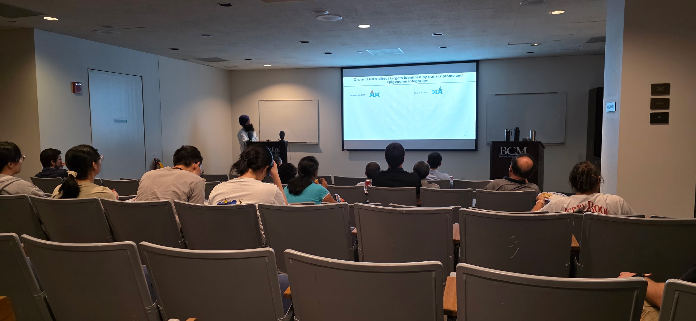
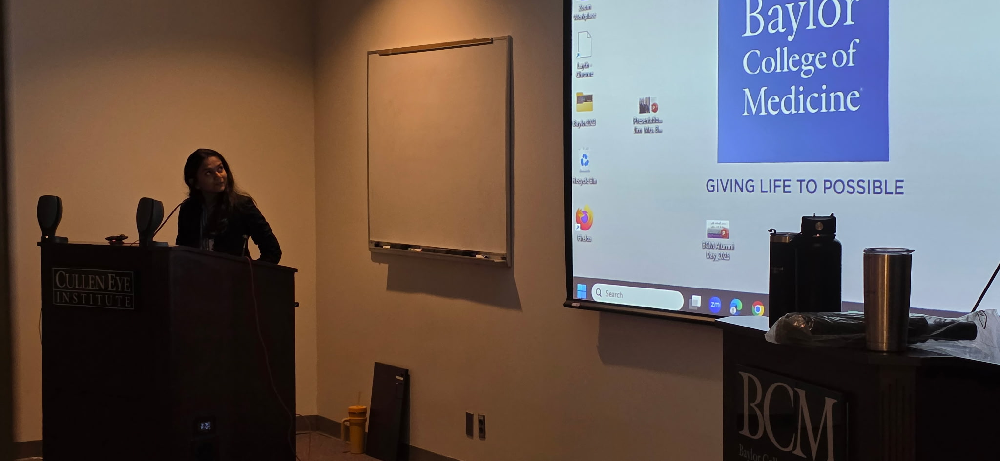
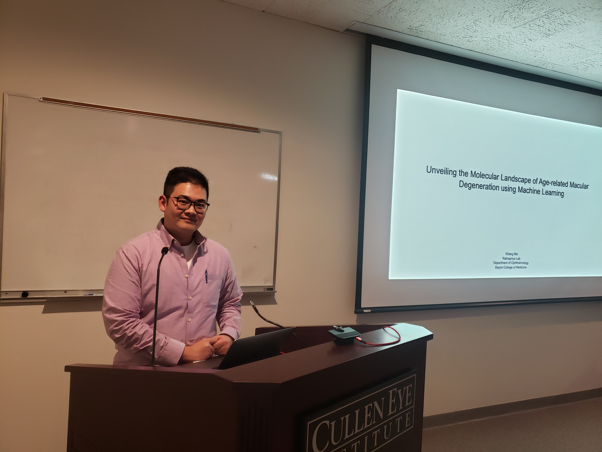
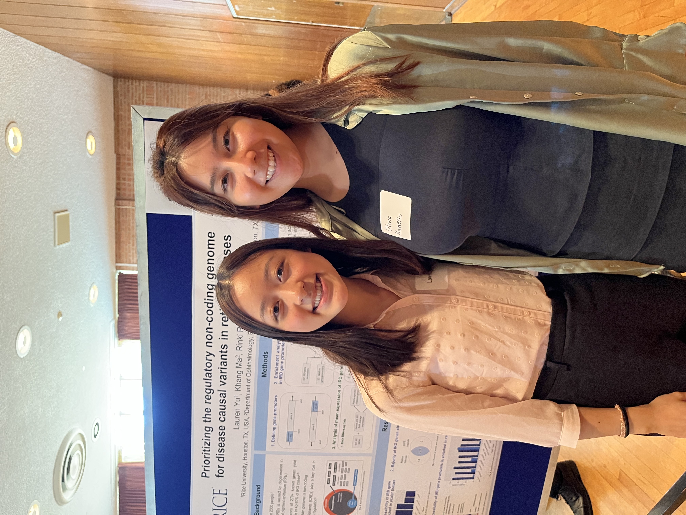

Lab News & Highlights
- October 2026: We're excited to welcome Vanessa Bentley as a postdoctoral associate and Vaishnavi Mallagundla as a research technician to RatnapriyaLab. Welcome, Vanessa and Vaishnavi!
- September 2026: We received our second R01 award from the National Eye Institiute to investigate the role of microglia at AMD-associated GWAS loci.
- August 2026: We're excited to welcome our new undergraduate researchers, Neva Aygar, Shaafee Chaudhary, and Daniel Song to the lab!
- May 2026: Rinki was invited to deliver the keynote speaker at 2026 Vision Research Symposium, Department of Ophthalmology and Visual Sciences, University of Alburquerque, New Mexico, May 2026.
-
May 2026: Rinki hosted a "Breakfast with the Experts" table at the Association for Research in Vision and Ophthalmology (ARVO) Annual Meeting in Denver, Colorado, in May 2026, engaging participants in discussions on self-promotion, professional visibility, and career advocacy.

- April 2026: Big milestone for the lab! We received our first R01 funding from National Eye Institute to investigate the cellular and molecular mechanisms underlying AMD. We're hiring! Come join us and help uncover the biology behind AMD.
-
March 2026: Rinki was invited as a task group leader to lead the identifying targets by disease stages for Ryan Initiattive for Molecular Research, 2026.

-
February 2026: Anika Kulkarni, an undergraduate student in the lab, presented her research at the Rice University School of Engineering Research Symposium. Her work focused on comparing transcriptomic profiles across human retinal organoids and mouse to better understand the molecular mechanisms underlying retinal degeneration.

- January 2026: Lahari Chennupati joins the lab as undergraduate researcher. Welcome, Lahari!
- January 2026: The lab received grant funding from the Retina Research Foundation to investigate how epigenetic and regulatory mechanisms contribute to genetic heterogeneity in inherited retinal diseases (IRDs).
- Aug 2025: Khang’s paper was accepted in Genome Research. Congratulations, Khang!
-
Aug 2025: Ajeet Singh and Pinal Koaldiya presented their work at Departmental Trainee seminar.


- May 2025: Khang’s paper was accepted in Genomic Medicine. Congratulations, Khang!
- May 2025: Rinki’s review on functional genomics approaches in age-related macular degeneration was published.
-
March 2025: Rinki was invited to lead the multi-omics group at Ryan Initiative for Macular Research Conference.

- March 2025: Vandana Venkatesh joined the lab as part of the SOAR (Student Opportunities for Advancement in Research) program. Welcome, Vandana!
- December 2024: Ajeet’s paper was accepted for publication in Human Molecular Genetics. Congratulations, Ajeet!
- August 2024: Two new members joined the lab: Pinal Koladiya as a research technician and Anika Kulkarni as an undergraduate researcher. Welcome, Pinal and Anika!
- May 2024: Rinki was selected for the 2024–2025 class of the Women’s Leadership Development Program by ARVO. Congratulations!
- April 2024: Rinki was invited to participate in the Ryan Initiative for Macular Research as an AMD expert.
-
Feb 2024: Khang Ma presented his machine-learning work at Departmental Trainee seminar.

-
September 2023: Lauran Yu and Olivia Kaneko presented their work at Rice Undergraduate Research Symposium.

- March 2023: Ajeet Singh joins the lab as a postdoctoral researcher. Welcome, Ajeet!
- March 2023: Rinki was invited to speak at the “Emerging Horizons in Retinal Genetics, Biology, and Disease” Symposium, hosted by the National Eye Institute (NEI).
- December 2022: Rinki joined the editorial board of Molecular Vision.
-
August 2022: Rinki traveled to Washington, D.C., to participate in the Emerging Vision Scientist (EVS) Program, advocating for vision research on Capitol Hill.

- July 2022: Khang Ma joined the lab as a research technician. Welcome, Khang!
- July 2022: We received an Individual Investigator Research Grant from the Foundation Fighting Blindness to study inherited retinal disease networks.
- June 2022: Lab was awarded the BCM Junior Faculty Seed Award from Baylor College of Medicine.
- November 2021: Hosei Nakajima joined as our bioinformatics analyst. Welcome, Hosei!
- October 2021: Lauren Yu joined the lab as an undergraduate research assistant. Welcome, Lauren!
- August 2021: Our new publication reporting a novel ARL3 gene mutation associated with autosomal dominant retinal degeneration is now out—congratulations to the team!
- July 2021: Rinki received a Career Development Award from Research to Prevent Blindness.
- April 2021: We received our first research funding with a New Investigator Grant from the BrightFocus Foundation.
Contact
Rinki Ratnapriya, Ph.D.
Assistant Professor
Department of Ophthalmology
Baylor College of Medicine
6565 Fannin, NC205
Houston, Texas 77030
Tel: 713-798-4757
Email: rpriya@bcm.edu
Social
© 2025 RatnapriyaLab. All rights reserved.